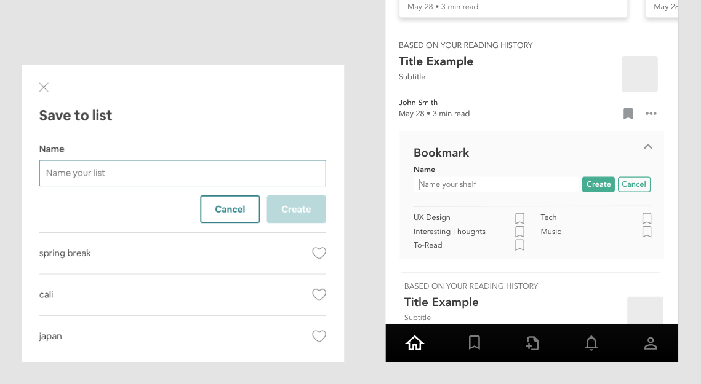
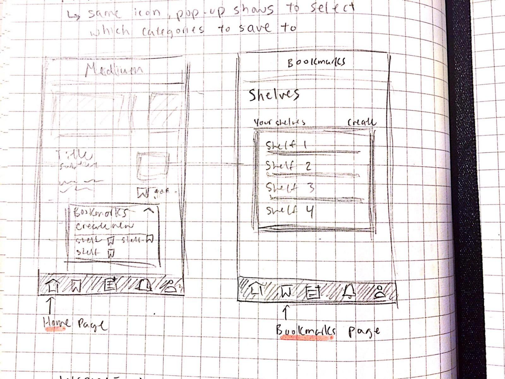
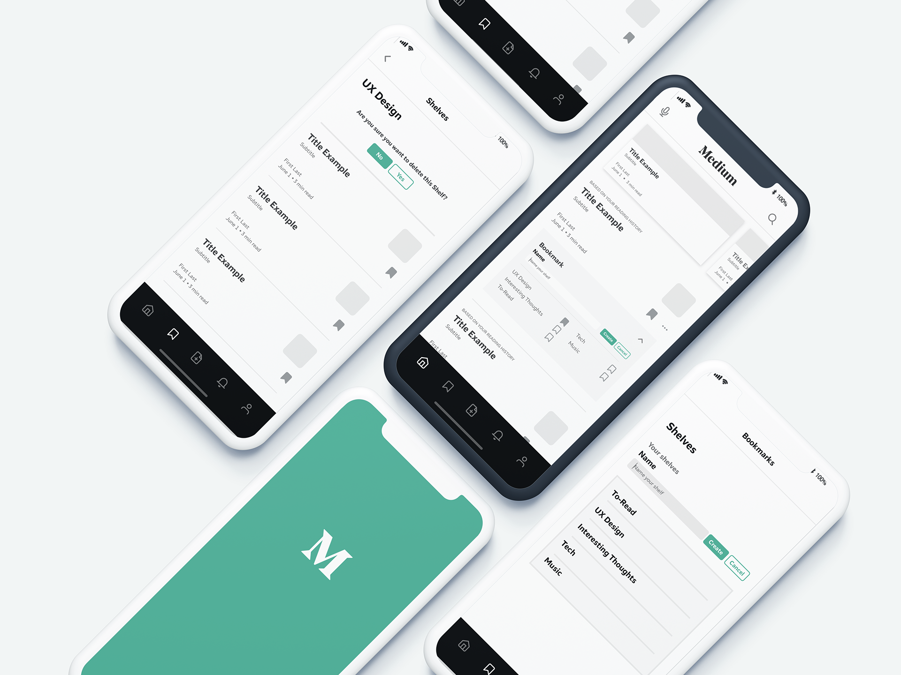
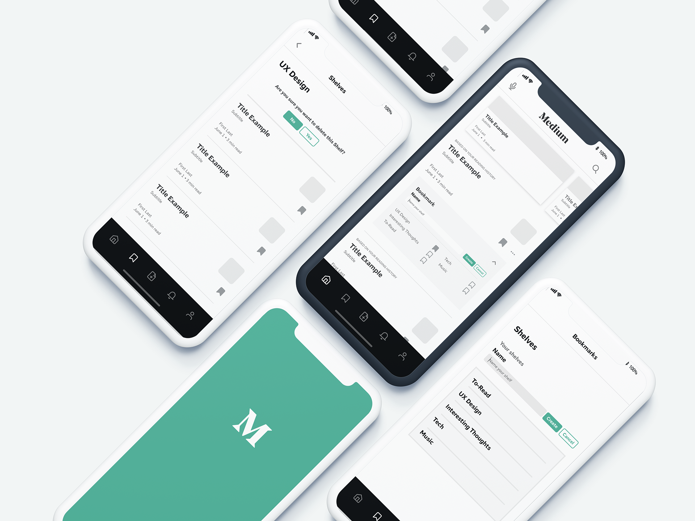
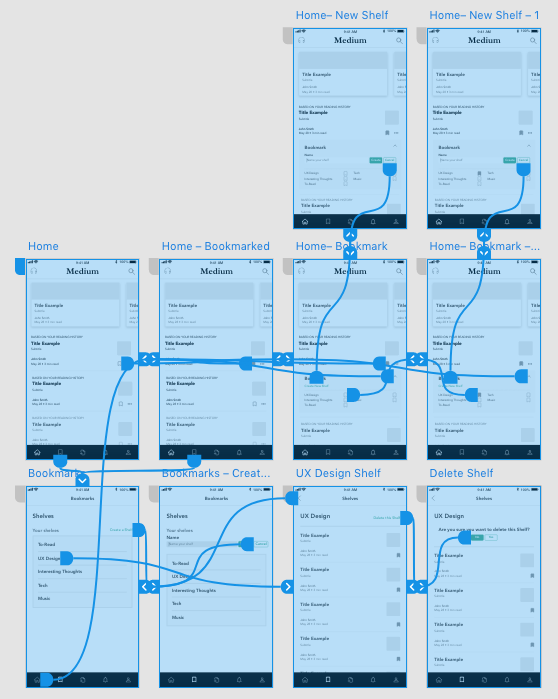

Side ProjectTimeline: 1 week
How can we create a more robust way for users to bookmark future reading material on Medium?

As of now, you can only either save articles you liked to your “Bookmarks” or to your “Claps”– offering only two lists to differentiate your articles.
Create a feature that allows users to categorize their favorite articles into different categories like Pinterest boards or Youtube playlists. In the case of Medium, I decided to categorize the bookmarks into “shelves”.
These “shelves” act as the topics in which users can sort their articles, much like how you’d place similar genre books near each other on a bookshelf. The way the bookmarking looks on the home page is heavily inspired by Airbnb. I felt that the clean and straightforward look of the Save to List modal window fit in quite well with Medium’s overall brand.
Lo-fidelity Wireframes
Quick sketch of the Home and Bookmarks page, which now displays a bookcase instead of your list of bookmarked articles.
High-fidelity Wireframes
I recreated the Medium homepage using Adobe XD and Sketch to be more conscious of how my new feature would fit with the existing look and feel. The following pictures show the three groups of pages I made changes to for the new bookmarking function.


 

The diagram below shows the flow, which I used a lot to ensure that all the functions of the new bookmarking feature would seem natural and intuitive to the user.
Here's the prototype in action!
Something I did forget to add, but would be great to have, is an option to share your shelf. Medium is an inherently social platform that allows anyone to write and share ideas, so I think it’s always a good idea to keeping thinking about the ways we can connect people with people.